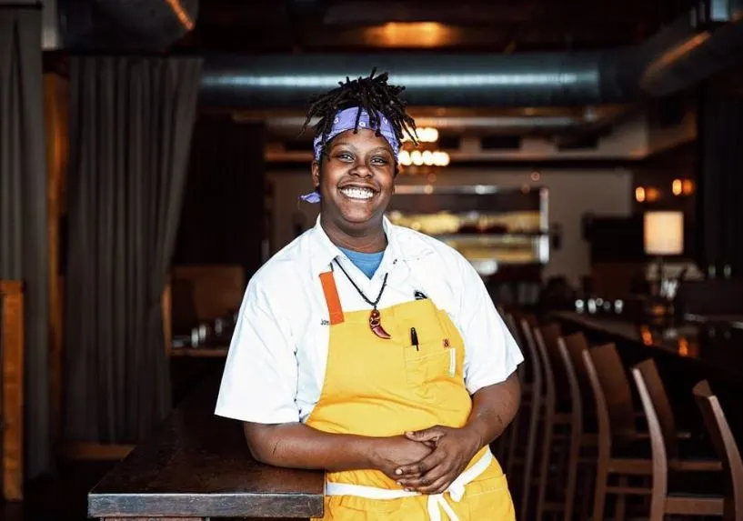
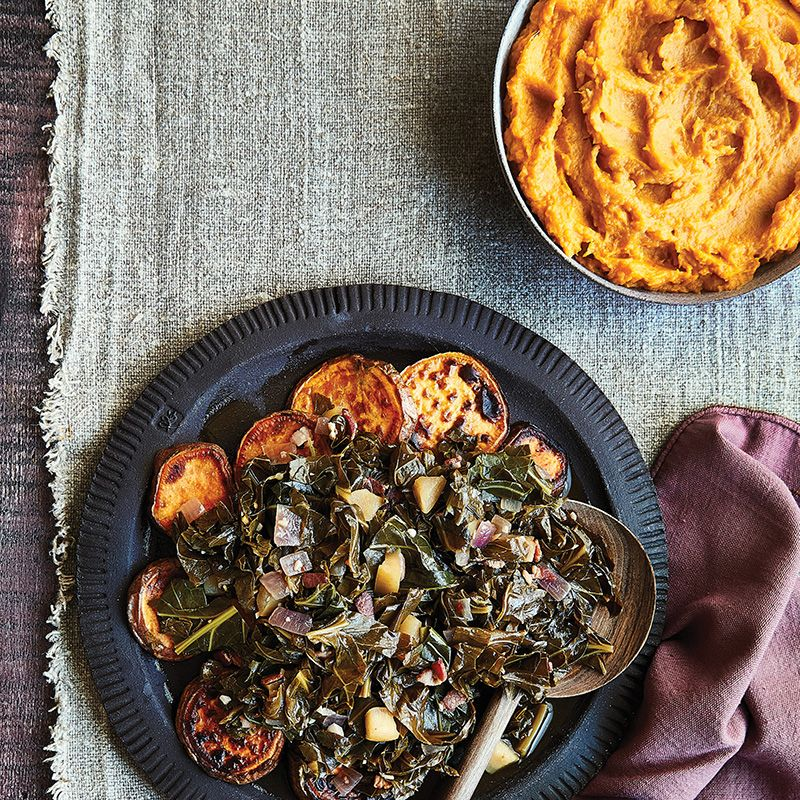

Chef John-Carter Ayanna


Review
I recently had her food for the first time through MONOSPACE-CHA hosting an event at the downtown bar The Boneyard. All I can say, is if I had all of the disposable income available to me, I would have gotten one of everything on this menu THEN handed her another couple hundred on top. This food was BOMB.
I got the pleasure of trying some oxtail tacos and a smashed potato medley. The stewed oxtail was tender, full of flavor, and paired so nicely with the Cilantro and Onion. Each piece in the smashed potato medley was fried to crispy perfection, and the green goddess aoili paired perfectly with everything on my plate.
You can tell this menu was built with love and care in every detail of every bite. Though I've only tried Chef Ayanna's cooking once, I cannot wait until the next event she hosts.